小红书视频专项拉片 · 新手版
《雷军请回答 DAY 3》
花字与重点音效
这份报告不从复杂剪辑理论开始，只回答三个问题：画面上到底出现了哪些重点字？它们怎样动？出现时有没有独立音效？所有时间码和截图均来自 127.87 秒原片。
720×128030fps11 组文字设计5 张问题卡4 组人物花字离线音轨核验
先学什么：先复刻“蓝底问题卡”，再练 4 组人物旁侧关键词。它们覆盖了这条片 80% 的文字节奏语言，也是新手最容易做出明显提升的两类。
先别做什么：不要急着搜一堆 whoosh、pop 音效。原片绝大多数重点字没有可独立确认的音效，力量来自人物重音、文字出现时机和留白。
你的学习顺序
01 问题卡学纯色、断句、逐字出现和阅读停留。
02 关键词学如何只挑名词、数据和结论，不把字幕放大。
03 声音克制先用人声重音承担卡点；确认缺力量时再加一枚短音效。
全片文字系统
| 类型 | 数量 | 统一规则 | 剪辑任务 |
|---|
| 栏目标题 | 1 | 蓝底、白字、字块显现、英文副标 | 建立系列识别 |
| 问题卡 | 5 | #337494 蓝底，左对齐，约每 0.15s 增加一组字 | 章节分隔、让观众先读问题 |
| 人物强调花字 | 4 | 大号白字，只保留关键词；避开脸和手势 | 把答案压缩成记忆点 |
| 片尾信息卡 | 1 | 黑底、圆形人物、活动信息延迟出现 | 从金句自然过渡到行动召唤 |
声音核验先说结论
整条音轨左右声道逐样本完全相同：最大左右差值为 0，属于双单声道。因此不能靠左右声像把音效从人声里分离。
在 11 组文字入点中，只有“找人／攒钱”附近检测到明显短促能量上升，但它与雷军说出关键词的语音重音完全重叠，不能可靠证明另加了 pop 或 click。其余入点未检出可独立归因的短促音效。
可执行结论：先做“无独立音效版”。如果你自己的素材显得软，只在数字、反转或片尾转场上试加 1 枚轻短音效，并把它压在人声下面；不要每个字都配音效。
逐组截图与动画拆解
01栏目识别
00:00.00 — 00:02.60
开场栏目标题
雷军请回答
DAY 3
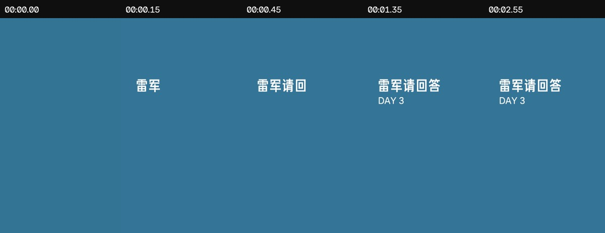
动画序列：按真实时间码抽帧
完整定格
- 画面位置
- 全屏蓝底；白字居中略偏上；英文副标题置于主标题下方
- 文字动画
- 主标题按字块依次显现；约 0.60s 完成。DAY 3 与短横线约 1.35s 整体出现，无明显缩放。
- 声音核验
- 未检出独立短促瞬态；更可能由语音重音或画面切换承担强调
- 为什么有效
- 先建立栏目识别，再进入问题；纯色背景把注意力全部让给文字。
- 新手复现
- 先做 0.6s 的分块显现，停 0.6s，再加入英文副标题；不要加复杂飞入。
02问题卡
00:02.60 — 00:07.17
问题卡①
小米十五周年
你认为最重要的事
是什么？
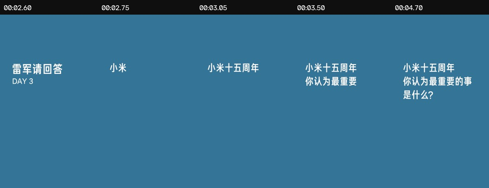
动画序列：按真实时间码抽帧
完整定格
- 画面位置
- 全屏蓝底；左对齐三行白字；画面中部偏左
- 文字动画
- 旧标题先保留一帧，随后问句按 2—3 字一组逐步补齐；不是整段淡入。
- 声音核验
- 未检出独立短促瞬态；更可能由语音重音或画面切换承担强调
- 为什么有效
- 观众先读问题，再听答案；逐字出现把 4.57s 静态卡变成持续有变化的画面。
- 新手复现
- 每 4—5 帧增加一小组字，完整后至少留 1.5s 阅读时间。
03人物画面强调花字
00:08.84 — 00:10.97
重点词①
找人
攒钱
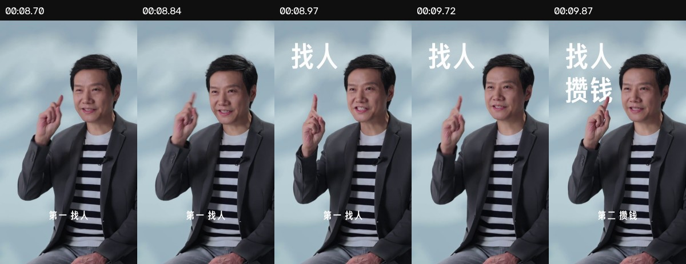
动画序列：按真实时间码抽帧
完整定格
- 画面位置
- 人物左上方；两行超大白字；避开脸和手势
- 文字动画
- “找人”约 8.84—8.97s 出现；“攒钱”约 9.72—9.87s 补入。两次均在 0.15s 内完成，接近短促硬显/极短淡入。
- 声音核验
- 检出短促能量变化，但与语音或背景音乐无法可靠分离
- 为什么有效
- 一问一答里只有两个名词需要记住，画面把抽象回答压缩成两枚视觉锚点。
- 新手复现
- 只保留两个关键词；第一个贴“第一”，第二个贴“第二”，每次入场不超过 5 帧。
04问题卡
00:18.30 — 00:21.67
问题卡②
这么多年，/ 为啥你
还在工作一线？
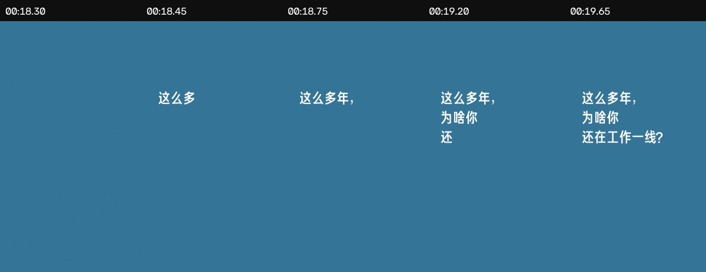
动画序列：按真实时间码抽帧
完整定格
- 画面位置
- 全屏蓝底；左对齐三行白字
- 文字动画
- 18.30s 先空蓝底；18.45s 开始分块打字，约 19.65s 完整，随后保持到切回人物。
- 声音核验
- 未检出独立短促瞬态；更可能由语音重音或画面切换承担强调
- 为什么有效
- 蓝底是一拍明确的章节标点，同时给上一段答案一个呼吸口。
- 新手复现
- 问题不超过三行；每行按语义断句，不按固定字数硬断。
05人物画面强调花字
00:40.25 — 00:42.00
重点词②
来小米
做同事
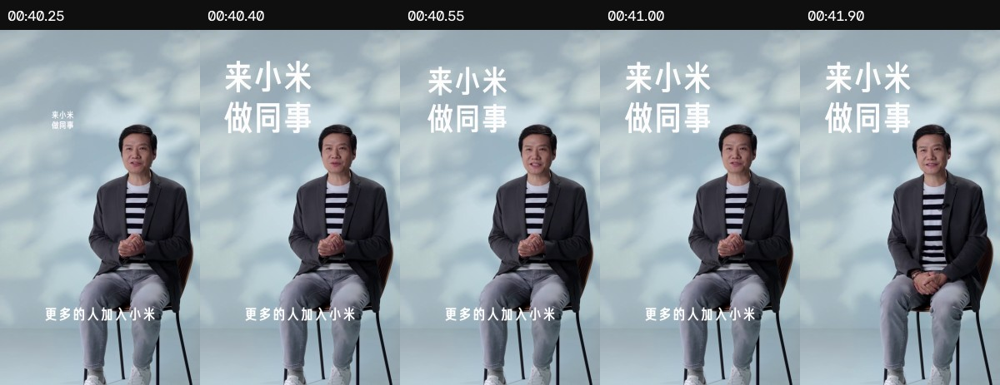
动画序列：按真实时间码抽帧
完整定格
- 画面位置
- 人物上方空白区；两行大白字
- 文字动画
- 40.25s 尚未出现，40.40s 已基本完整；属于 ≤0.15s 的单拍出现，并一直保持到问题卡切换。
- 声音核验
- 未检出独立短促瞬态；更可能由语音重音或画面切换承担强调
- 为什么有效
- 把普通的招聘句变成一句可截图传播的口号，同时不遮挡人物脸部。
- 新手复现
- 用两行 4—6 字的口号式排版；先找空白区，再决定字号，不要先套固定位置。
06问题卡
00:42.00 — 00:45.63
问题卡③
这些年
你们受到很多质疑
你怎么看？
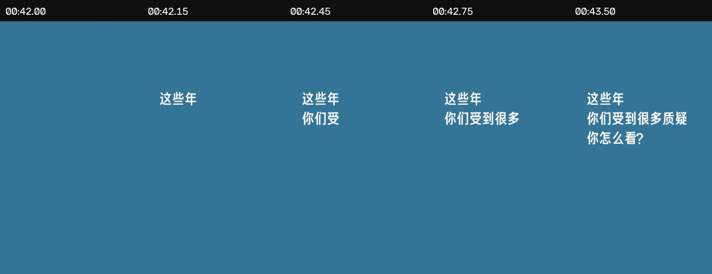
动画序列：按真实时间码抽帧
完整定格
- 画面位置
- 全屏蓝底；左对齐三行白字
- 文字动画
- 42.00s 空蓝底；42.15s 出现首词，随后约每 0.15s 增加 2—3 个字。
- 声音核验
- 未检出独立短促瞬态；更可能由语音重音或画面切换承担强调
- 为什么有效
- 在“人才”段和“质疑”段之间建立清晰章节边界。
- 新手复现
- 把问题卡视为章节转场；颜色、字体、节奏全部复用，形成栏目统一性。
07问题卡
01:23.27 — 01:25.87
问题卡④
小米高端化
成了吗？
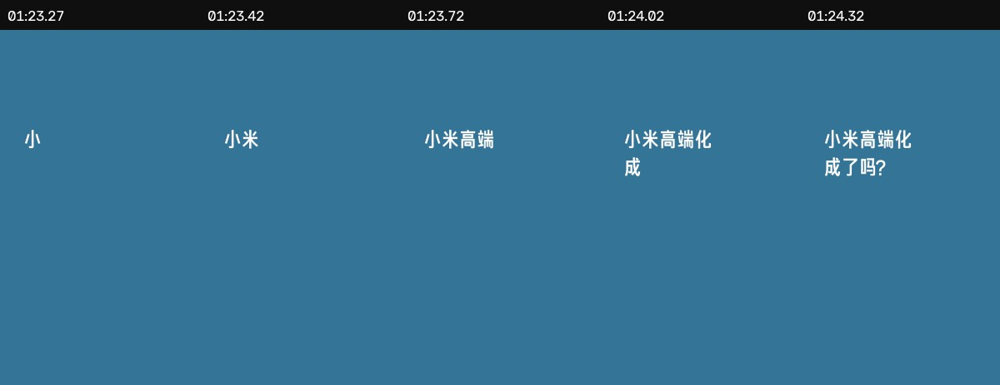
动画序列：按真实时间码抽帧
完整定格
- 画面位置
- 全屏蓝底；左对齐两行白字
- 文字动画
- 从“小”开始逐块补齐；约 1.05s 完成全部问句，剩余约 1.5s 供阅读。
- 声音核验
- 未检出独立短促瞬态；更可能由语音重音或画面切换承担强调
- 为什么有效
- 问题更短，动画也更快；字数与卡片时长同步缩短。
- 新手复现
- 短问题控制在约 1s 内写完；不要沿用长问题的慢速模板。
08问题卡
01:47.97 — 01:50.93
问题卡⑤
是不是
还有很多失败经历
没对外说？
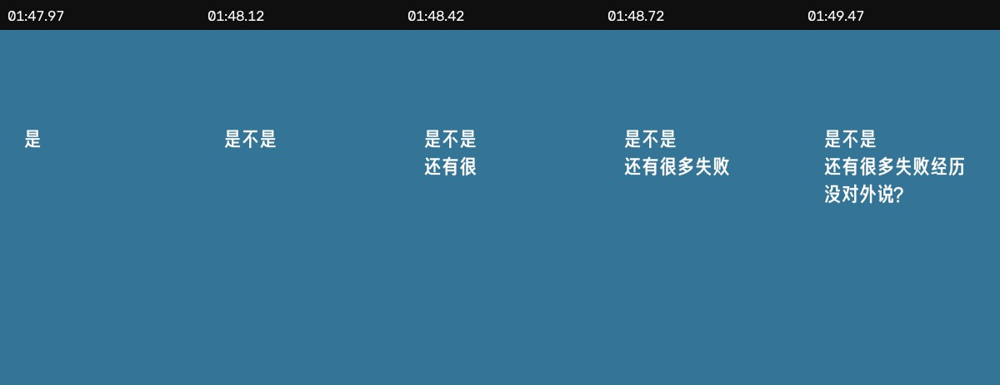
动画序列：按真实时间码抽帧
完整定格
- 画面位置
- 全屏蓝底；左对齐三行白字
- 文字动画
- 按语义块逐步补齐；前两行先完成，最后一行作为追问落点。
- 声音核验
- 未检出独立短促瞬态；更可能由语音重音或画面切换承担强调
- 为什么有效
- 把“失败”这个新冲突单独立题，避免观众把它当作上一问的补充。
- 新手复现
- 最后一行只放追问或反转词，让问号成为视觉节拍。
09人物画面强调花字
01:58.85 — 02:01.13
重点词③
成功率
100%
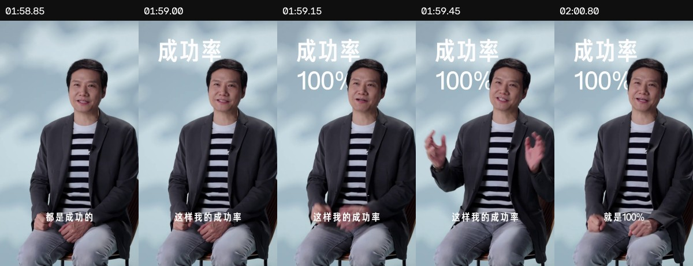
动画序列：按真实时间码抽帧
完整定格
- 画面位置
- 人物左上方；大号白字；数字单独一行
- 文字动画
- 118.85s 无字；约 119.00s 先出“成功率”，约 119.15s 再出“100%”，形成 0.15s 的两拍递进。
- 声音核验
- 未检出独立短促瞬态；更可能由语音重音或画面切换承担强调
- 为什么有效
- 先给概念、再给结果，第二拍的数字制造笑点和记忆点。
- 新手复现
- 数据花字分两拍：标签先到，数字后到；数字至少与标签同大，必要时更大。
10人物画面强调花字
02:01.73 — 02:03.63
重点词④
人还是要
乐观
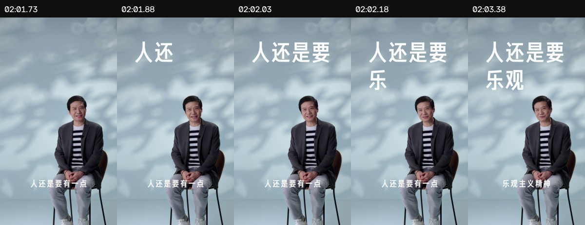
动画序列：按真实时间码抽帧
完整定格
- 画面位置
- 人物左上方；两行超大白字
- 文字动画
- 约 121.88s 第一行出现；122.03s 第二行先出“乐”，122.18s 补成“乐观”；之后进入圆形遮罩转场。
- 声音核验
- 未检出可独立归因的音效瞬态
- 为什么有效
- 结尾金句从完整句中只提炼“乐观”，既收束人物性格，也为片尾转场提供视觉中心。
- 新手复现
- 金句不要整句全打；上一行给语境，下一行只留一个核心词。
11片尾信息卡
02:03.63 — 02:07.87
片尾活动信息
2025 雷军年度演讲
9月25日19:00 等你来听
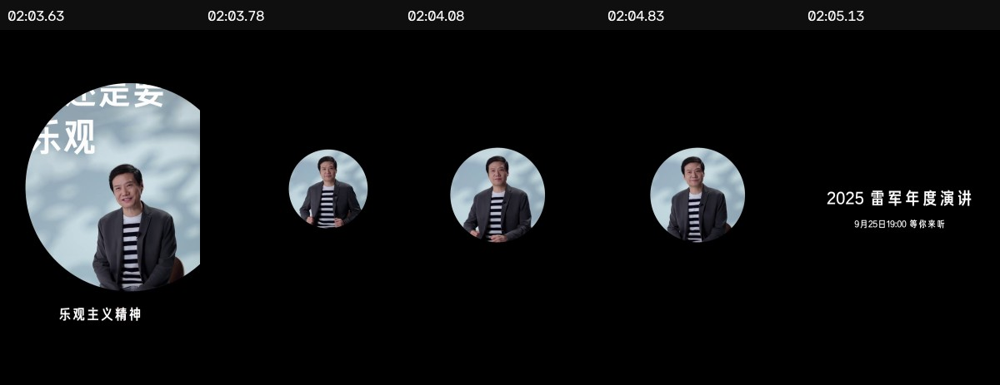
动画序列：按真实时间码抽帧
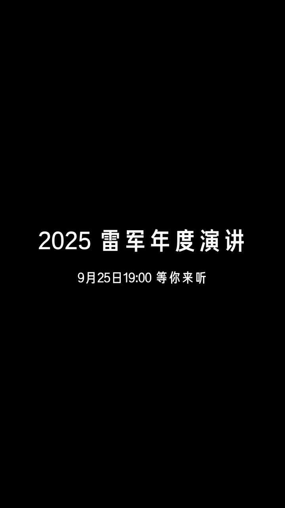
完整定格
- 画面位置
- 黑底；人物圆形画面居左；活动信息居中偏右
- 文字动画
- 123.63s 用圆形遮罩收住上一镜；约 0.15s 快速缩小后轻微回弹稳定；活动信息在约 125.13s 出现。
- 声音核验
- 未检出独立短促瞬态；更可能由语音重音或画面切换承担强调
- 为什么有效
- 把最后金句自然变成活动导流，不另起一条生硬广告片尾。
- 新手复现
- 先用形状遮罩把人物保留下来，再在 1s 后出现活动信息；信息只保留名称、日期、行动语。
复刻参数卡
蓝底问题卡
- 画布：720×1280，30fps。
- 背景取样：
#337494。 - 字体：无衬线黑体风格；成片无法确认具体字体。
- 字号参考：56—68px；白色；中粗或粗体。
- 每 4—5 帧补入 2—3 个字；完整后至少停 1.2—1.8s。
人物强调花字
- 先圈出脸、头发、手势和普通字幕安全区。
- 字号参考：92—110px；两行以内。
- 入场控制在 3—5 帧，优先硬显或极短淡入。
- 只打“找人、攒钱、100%、乐观”这类核心词。
声音处理
- 先让文字踩在人物重音上。
- 没有重音时，才考虑低音量 click/pop。
- 短音效不要做背景音乐的 follower 自动避让；单独调小音量即可。
- 不要根据波形猜具体音效库名称。
片尾圆形转场
- 以人物为圆心做遮罩。
- 约 0.15s 快速缩小，再轻微回弹稳定。
- 活动信息延迟约 1s 出现。
- 只保留活动名、时间和一个行动语。
45 分钟临摹练习
- 找一段 30—60 秒口播，先标出所有问题和 3 个真正值得记住的词。
- 用
#337494 做一张问题卡，按 4—5 帧一组字的速度写完。
- 给 3 个关键词做 3—5 帧硬显；每组保持 1.5—2.5 秒。
- 先不开音效看一遍：只要人声重音和文字落点已经有力，就保持安静。
- 最后只挑一个最强数字或转场，加一枚轻音效做 A/B 对比。
证据说明：“画面事实”来自真实逐帧截图；“音频核验”来自原片 48kHz PCM 音轨；“为什么有效”和“复现方法”属于剪辑分析推断。报告不识别也不猜测具体商业字体、曲名或音效库文件名。